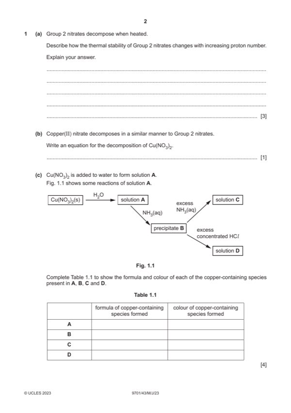

Question 1

Original paper page 2
Part 1(a) — solution
- [M1] increases (down the group) 3
- [M2] radius / size of (cat)ion / M2+ increases
- [M3] less polarisation / distortion of anion / nitrate ion / NO3– OR less weakening of N–O / N=O (bond)
Mark points
- [M1] increases (down the group) 3
- [M2] radius / size of (cat)ion / M2+ increases
- [M3] less polarisation / distortion of anion / nitrate ion / NO3– OR less weakening of N–O / N=O (bond)
Part 1(b) — solution
Cu(NO3)2 CuO + 2NO2 + ½O2 1
Mark points
- Include the ideas shown in the solution above.
Part 1(c) — solution
Answer: 4
4
copper-
formula of copper-containing colour copper-
containing
species formed containing formed
species
A [Cu(H2O)6]2+ (pale) blue
B Cu(H2O)4(OH)2 or Cu(OH)2 (pale) blue
C [Cu(NH3)4(H2O)2]2+ dark blue
D CuCl42– yellow
Two correct for one mark, four correct for two marks, six correct for three marks, eight correct for four marks.
Mark points
- Correct result: 4
Part 1(d)(i) — solution
- [M1] (a species) that donates more than two lone pairs 2
- [M2] to form dative / coordinate bonds to a metal atom or ion
Mark points
- [M1] (a species) that donates more than two lone pairs 2
- [M2] to form dative / coordinate bonds to a metal atom or ion
Part 1(d)(ii) — solution
six atoms circled, 2N and 4O from different CO2– 1
Mark points
- Include the ideas shown in the solution above.
Part 1(d)(iii) — solution
the number of co-ordinate bonds being formed by the metal ion 1
Mark points
- Include the ideas shown in the solution above.
Part 1(d)(iv) — solution
ligand exchange 1
Mark points
- Include the ideas shown in the solution above.
Part 1(d)(v) — solution
[FeEDTA]– > [CrEDTA]– > [PbEDTA]2– 1
highest concn lowest concn AND Kstab of [FeEDTA]– is highest
2023 Page 6 of 17
9701/43 Cambridge International AS & A Level – Mark Scheme May/June 2023
Mark points
- Include the ideas shown in the solution above.
Part 1(e) — solution
- [M1] moles of Cr3+ = 2.096 10–4 in 25.0 cm3) 3
- [M2] moles of Cr3+ = 8.384 10–4 (in 100.0 cm3)
- [M3] Mr of Cr2(SO4)3nH2O = 0.2550 / 4.192 10–4 = 608.3
Mark points
- [M1] moles of Cr3+ = 2.096 10–4 in 25.0 cm3) 3
- [M2] moles of Cr3+ = 8.384 10–4 (in 100.0 cm3)
- [M3] Mr of Cr2(SO4)3nH2O = 0.2550 / 4.192 10–4 = 608.3
Part 1(f) — solution
- [M1] E is different 2
- [M2] different frequency (of light) is absorbed
Mark points
- [M1] E is different 2
- [M2] different frequency (of light) is absorbed